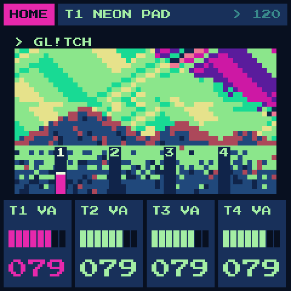
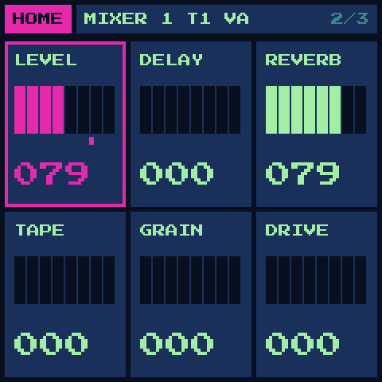
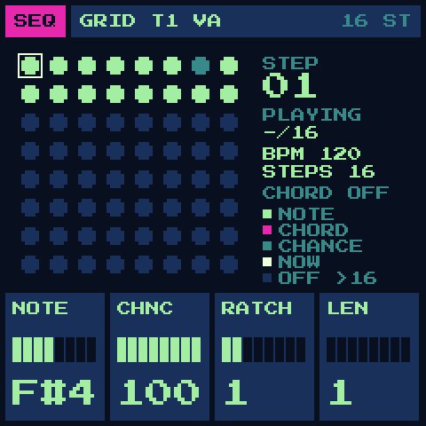
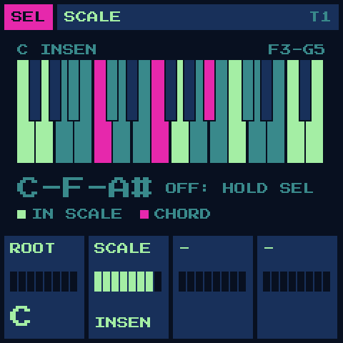
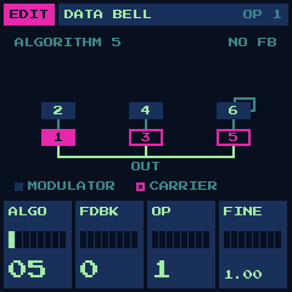
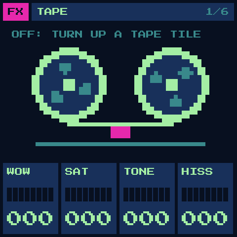
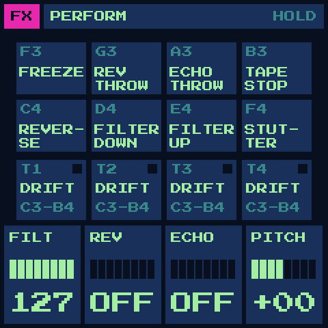
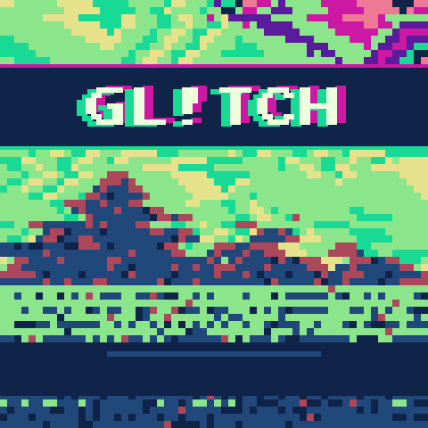

GL!TCH.
Neon noir, torn at the edges.
Four tracks.
Seven sources.
One small machine.
GL!TCH turns the M-VAVE FM-1 into a groovebox for dystopian sci-fi: a Blade Runner factory bank, six cyber scales, a 64-step sequencer, tape and megacity space.
It runs in your browser too: the emulator is the firmware itself, compiled to WebAssembly.
First steps: your first song ↗ Read the manual ↗ Open the editor ↗
01 / The sources
Seven ways to make a sound.
7 engines, any of them on any track
02 / On the unit
The screen, as the firmware draws it.
Shot from the firmware itself, pixel for pixel








03 / The scales
The keys snap to the scale.
Twelve semitones over the root: lit, in key
04 / Factory sounds
A bank for the megacity.
44 sounds, by category
05 / Install
On your FM-1, in a minute.
Build the package:
./build.sh --release 2.0.2→build/glitch-2.0.2.fwsc(JieLi toolchain:tools/get_toolchain.sh).Connect the FM-1 over USB and flash it:
python3 tools/fm1_install.py build/glitch-2.0.2.fwsc.The boot screen reads GL!TCH. Colour 1 is pink; SYSTEM has lemon, teal and violet. Unofficial firmware: install at your own risk.
06 / Play
Six moves to start.
- Turn PRESETS
- Step through the factory sounds by category.
- EDIT › SOURCE
- Pick the engine and turn its four knobs.
- SEL › SCALE
- Snap the keys to a scale; hold SEL for one-key chords.
- Hold FX + a black key
- GENERATE: the track plays itself, in the scale.
- FX › SPACE
- The megacity reverb, up to an endless freeze.
- Hold SAVE + white keys
- Recall or store slots A–D, on the bar.